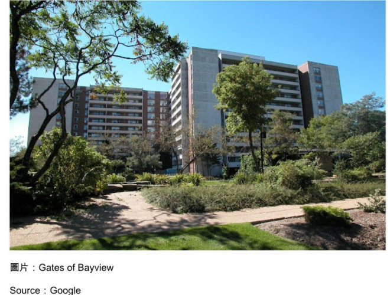

我们最近迁居到一个园林格局的的屋村（Gates of Bayview)，周围种满了各种不同的树木，空地则由青草及野花铺盖著。在盛夏的日子里，相信那些长满叶子的大树会将园内的建筑物拥抱起来，使人有点与外隔绝的感觉。我很快又发现附近有一条小溪，名叫German Mills Creek，在屋村西边的范围内穿过。在下了几场大雨之后，水位升高，水流湍急，水声潺潺，响过不绝。绿化的环境引来很多雀鸟及其他的小动物，在这里栖息，也吸引了苍鹰的关注，在上头低空盘旋，虎视眈眈，聚焦于这些弱小生物。

听说半个世纪之前，这里是一家锯木厂，还留下了一个石磨的遗迹作为证物。木厂停产之后，将土地出让给地产发展商，被开发成为了今天的屋村。由于环境优美，吸引不少爱好自然环境的人来此定居，很多还在此终老。
在半个世纪前，这里是市郊，野草丛生，交通不便，所以地价廉宜，屋村占地面积这么广，反映了当时的情况。时移世易，城市范围一直向北延伸，也出现了很多卫星城市。今天地价暴涨，大业主为了牟取更大的利润，会不会将这片土地重新发展呢？相信很多租户都会关注到这一点，但爱莫能助，只有听天由命。
屋村的经营看来很专业化，建筑物建成的日子虽然比较长，但得到适当的维修及保养，历久常新，最近又大兴土木，花巨资维修所有阳台，使建筑物的外型变得更加现代化及美观。据说空置率很低，大概是因为租金上调得合理及管理完善的结果。我参观过一些重要的设施之后，并和其他屋村作个比较，很快便下了决定，选择以此为未来的家居。
迁来几天之后，在搭乘升降机的时候，遇见很多邻居，在点头示意之外，还交谈起来。很多都在这里居住了很长的日子，都表示非常满意。我们听了信心大增，对自己的选择减少了很多顾虑。
黄昏时分，不少老人家喜欢走出来散步，呼吸新鲜空气。我和他们在四目交接之后，就打开话匣子，随便找个话题，东拉西扯。昨天遇到一个独自坐在一张长椅上的老汉，他面向斜阳，悠然自得。我向著他的方向走，并在他的面前停下来，自我介绍。他回应说他的名字叫马克(Mark)，便扯到他的背景。他原籍是犹太人，在乌克兰首都基辅出生，孩提时代经历过希特拉的入侵，成年后尝过苏维埃社会主义的统治，对现况不满，在三十年前由妻子的长兄协助，移居加拿大，行前将母亲送到以色列定居，以策安全。他对定居加拿大感到十分满意，但对为母亲作出的选择表示遗憾。以色列现下的情况更令他忧心忡忡，不过母亲早已离世，不会再遭受战乱之苦。马克是个飞机机械工程师，成为终生职业，现已退休，安享晚年。
来了新居之后，遇见最多的是多恩（Don)，因为他的汽车就停放在我汽车旁边的特定车位。我们一见如故。多恩说七年前妻子去世，在原来的房子继续生活，不时触景伤情，所以决心离开，搬到这里来。这里最吸引他的设施是室内游泳池，他每天都下水运动，锻炼身体，习以为常。他不但表示欢迎我成为邻居，还打算抽空开车带我到附近的购物中心及食肆一游，了解这个地区的情况。最近看不见他的汽车停在旁边，原来他申请了另一泊车位，著意多留点空间给我。这样的邻居十年难得一遇。
对于新的居住环境我还在设法去熟习及适应，与邻居多点接触有助于加速这方面的进度。